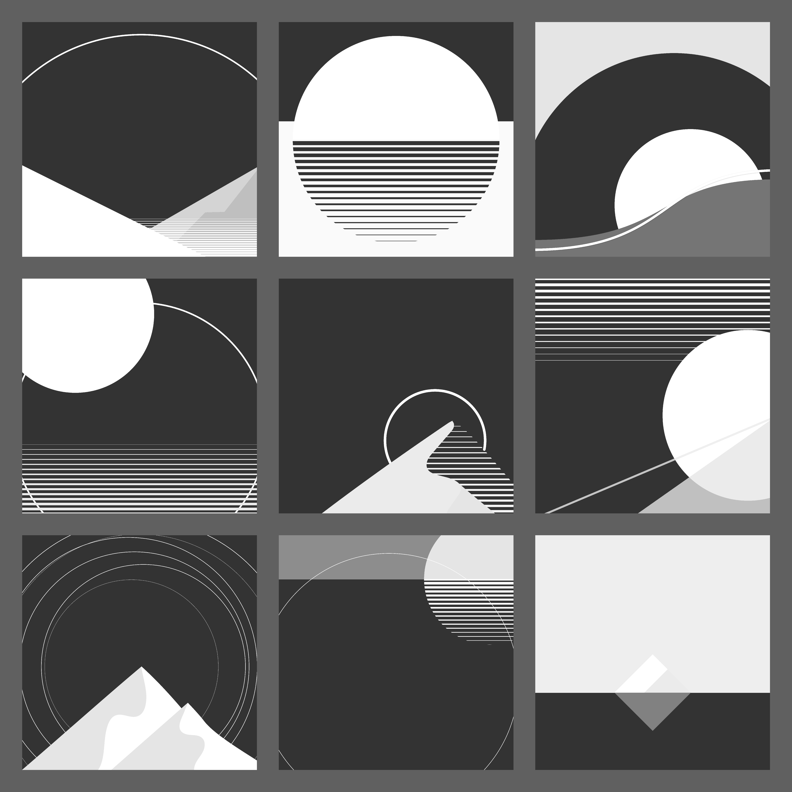
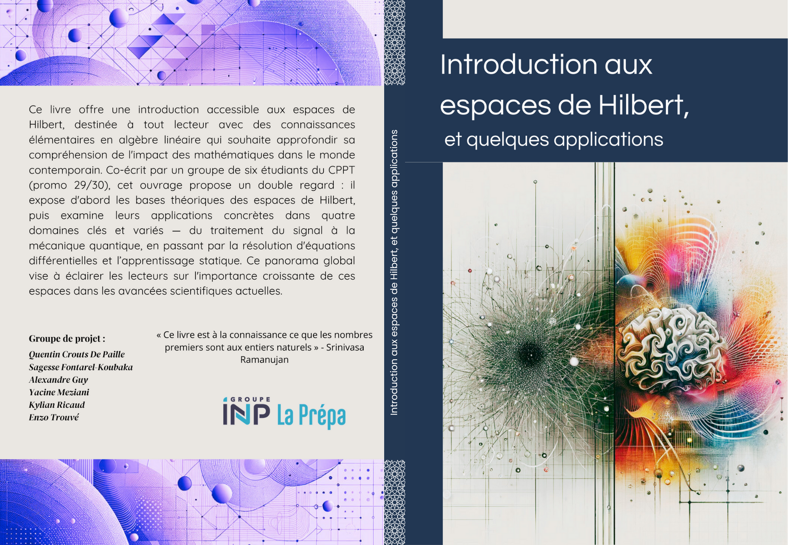
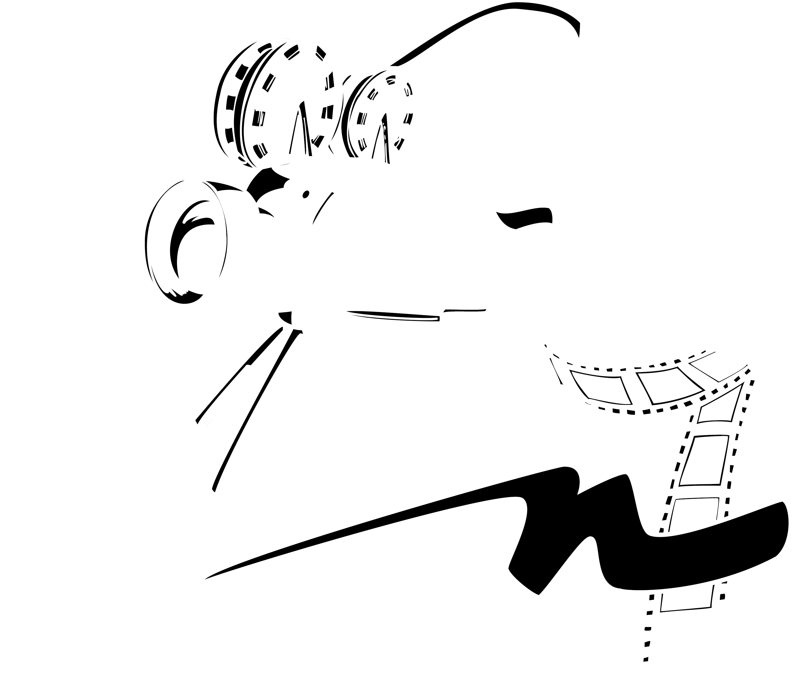

I am excited to announce the launch of my e-portfolio in its very first version ! While this is just the start, I have many improvements and new features in the pipeline that will be rolled out soon.
Projects & Productions
A showcase of technical engineering challenges, software development, and social impact initiatives.

Eco-Efficient Cargo Drone
Design and prototyping of a low-energy transport drone using additive manufacturing.

Software & Algorithms
Full-stack web development, game logic automation, and algorithmic optimization.

The Hilbert Spaces Handbook
Co-authored an academic book democratizing complex mathematical concepts for engineering applications.
Nepal STEM Initiative
IT Infrastructure deployment and scientific popularization mission in Sikles, Nepal.

Interactive Media & Production
Video game development and professional audiovisual production for commercial and creative clients.
×